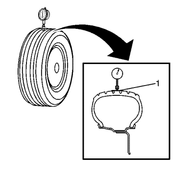
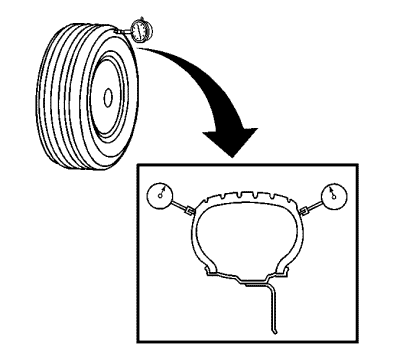

- Elevar el vehículo y soportarlo de manera segura.
- Inspeccione atentamente cada neumático para verificar el correcto y uniforme asentamiento de los rebordes.
- Si alguno de los rebordes no estuviera correcta o uniformemente asentado, reasiéntelo y continúe después con el paso 4. Consulte Desmontaje y montaje de la rueda y el neumático .

- Enrolle la circunferencia de cada neumático con cinta (1) en el área central del perfil.
El enrollado del perfil con cinta permite obtener una lectura eficaz y precisa de la excentricidad.
- Coloque el indicador de dial sobre la porción del perfil del neumático cubierta con cinta de tal forma que el indicador sea perpendicular a la superficie del perfil.
- Gire lentamente el conjunto de neumático y llanta una vuelta completa para localizar el punto bajo.
- Ajuste el indicador de dial en cero en el punto bajo.
- Gire lentamente el conjunto de neumático y llanta una vuelta completa más y mida la cantidad total de excentricidad.
Especificaciones
Máxima excentricidad del conjunto de neumático y llanta medida dentro del vehículo: 1,52 mm (0,060 pulg.)

- Coloque el indicador de dial sobre una sección lisa de la pared lateral del neumático, tan cerca del perfil como sea posible, de tal forma que el indicador sea perpendicular a la superficie de la pared.
- Gire lentamente el conjunto de neumático y llanta una vuelta completa para localizar el punto bajo. Ignore cualquier interrupción o depresión existente debidas a uniones de las láminas.
- Ajuste el indicador de dial en cero en el punto bajo.
- Gire lentamente el conjunto de neumático y llanta una vuelta completa más y mida la cantidad total de alabeo. Ignore cualquier interrupción o depresión debidas a uniones en la pared lateral y obtenga una medida de alabeo medio.
Especificaciones
Máximo alabeo del conjunto de neumático y llanta medida dentro del vehículo: 1,52 mm (0,060 pulg.)
- Repita los pasos del 4 al 12 hasta haber obtenido todas las medidas de excentricidad y alabeo de los conjuntos de neumático y llanta.
- Bajar el vehículo.